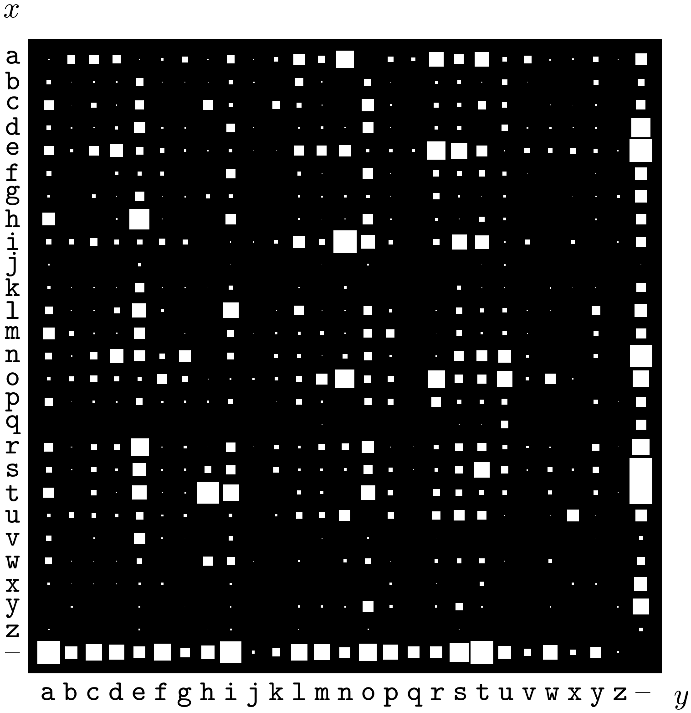
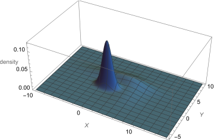
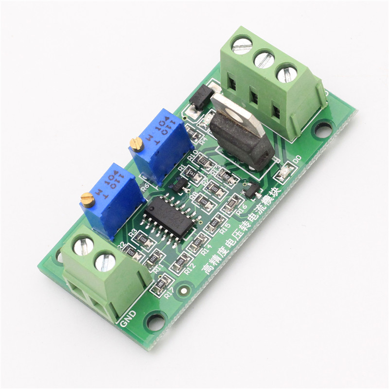

15 Joint probability distributions
\(\DeclarePairedDelimiter{\set}{\{}{\}}\)
So far we have considered probability distributions for quantities of a basic (binary, nominal, ordinal, interval) type. These distributions have a sort of one-dimensional character and can be represented by ordinary histograms, line plots, and scatter plots. We now consider probability distributions for the kind of joint quantities that were discussed in § 13.1.
15.1 Joint probability distributions
A joint quantity is just a collection or set of quantities of basic types. Saying that a joint quantity has a particular value means that each basic component quantity has a particular value in its specific domain. This is expressed by an and of sentences.
Consider for instance the joint quantity \(X\) consisting of the age \(\color[RGB]{102,204,238}A\) and sex \(\color[RGB]{34,136,51}S\) of a specific person. The fact that \(X\) has a particular value is expressed by a composite sentence such as
\[ \textsf{\small`The person's age is 25 years and the person's sex is female'} \]
which we can compactly write with an and:
\[ {\color[RGB]{102,204,238}A\mathclose{}\mathord{\nonscript\mkern 0mu\textrm{\small=}\nonscript\mkern 0mu}\mathopen{}25\,\mathrm{y}} \land {\color[RGB]{34,136,51}S\mathclose{}\mathord{\nonscript\mkern 0mu\textrm{\small=}\nonscript\mkern 0mu}\mathopen{}\mathrm{f}} \]
All the possible composite sentences of this kind are mutually exclusive and exhaustive.
An agent’s uncertainty about \(X\)’s true value is therefore represented by a probability distribution over all and-ed sentences of this kind, representing all possible joint values:
\[ \mathrm{P}\bigl({\color[RGB]{102,204,238}A \mathclose{}\mathord{\nonscript\mkern 0mu\textrm{\small=}\nonscript\mkern 0mu}\mathopen{}25\,\mathrm{y}} \land {\color[RGB]{34,136,51}S\mathclose{}\mathord{\nonscript\mkern 0mu\textrm{\small=}\nonscript\mkern 0mu}\mathopen{}\mathrm{f}} \nonscript\:\vert\nonscript\:\mathopen{} \mathsfit{I}\bigr) \ , \qquad \mathrm{P}\bigl({\color[RGB]{102,204,238}A \mathclose{}\mathord{\nonscript\mkern 0mu\textrm{\small=}\nonscript\mkern 0mu}\mathopen{}31\,\mathrm{y}} \land {\color[RGB]{34,136,51}S\mathclose{}\mathord{\nonscript\mkern 0mu\textrm{\small=}\nonscript\mkern 0mu}\mathopen{}\mathrm{m}} \nonscript\:\vert\nonscript\:\mathopen{} \mathsfit{I}\bigr) \ , \qquad \dotsc \]
where \(\mathsfit{I}\) is the agent’s state of knowledge, and the probabilities sum up to 1. We call each of these probabilities a joint probability, and their collection a joint probability distribution. Usually these probabilities are written in a much abbreviated form. A comma “\(\mathbin{\mkern-0.5mu,\mkern-0.5mu}\)” is typically used instead of “\(\land\)” (§ 6.4). You can commonly encounter the following notation:
\[ \mathrm{P}(A\mathclose{}\mathord{\nonscript\mkern 0mu\textrm{\small=}\nonscript\mkern 0mu}\mathopen{}25 \mathbin{\mkern-0.5mu,\mkern-0.5mu}S\mathclose{}\mathord{\nonscript\mkern 0mu\textrm{\small=}\nonscript\mkern 0mu}\mathopen{}\mathrm{f} \nonscript\:\vert\nonscript\:\mathopen{} \mathsfit{I}) \]
or even just
\[ \mathrm{P}(25, \mathrm{f} \nonscript\:\vert\nonscript\:\mathopen{} \mathsfit{I}) \]
15.2 Representation of joint probability distributions
There is a wide variety of ways of representing joint probability distributions, and new ways are invented (and rediscovered) all the time. In some cases, especially when the quantity has more than three component quantities, it can become impossible to graphically represent the probability distribution in a faithful way. Therefore one often tries to represent only some aspects or features of interest of the full distribution. Whenever you see a plot of a joint probability distribution, you should carefully read what the plot shows and how it was made. Here we only illustrate some examples and ideas for representations.
Tables
When a joint quantity consists of two, discrete and finite component quantities, the joint probabilities can be reported as a table, sometimes called a contingency table1.
1 this term is most often used for joint distributions of frequencies rather than probability
Example: Consider the next patient that will arrive at a particular hospital. There’s the possibility of arrival by \({\small\verb;ambulance;}\), \({\small\verb;helicopter;}\), or \({\small\verb;other;}\) transportation means; and the possibility that the patient will need \({\small\verb;urgent;}\) or \({\small\verb;non-urgent;}\) care. We can represent these possibilities by two quantities \(T\) (nominal) and \(U\) (binary). Now suppose that an agent has the following joint probability distribution, conditional on the hospital’s data \(\mathsfit{I}_{\text{H}}\):
| \(\mathrm{P}(U\mathclose{}\mathord{\nonscript\mkern 0mu\textrm{\small=}\nonscript\mkern 0mu}\mathopen{}u \mathbin{\mkern-0.5mu,\mkern-0.5mu}T\mathclose{}\mathord{\nonscript\mkern 0mu\textrm{\small=}\nonscript\mkern 0mu}\mathopen{}t\nonscript\:\vert\nonscript\:\mathopen{}\mathsfit{I}_{\text{H}})\) | transportation at arrival \(T\) | |||
| ambulance | helicopter | other | ||
| urgency \(U\) | urgent | 0.11 | 0.04 | 0.03 |
| non-urgent | 0.17 | 0.01 | 0.64 | |
From the table we see that the most probable possibility is that the next patient will arrive by other transportation means than ambulance and helicopter, and will not require urgent care:
\[\mathrm{P}(U\mathclose{}\mathord{\nonscript\mkern 0mu\textrm{\small=}\nonscript\mkern 0mu}\mathopen{}{\small\verb;non-urgent;}\mathbin{\mkern-0.5mu,\mkern-0.5mu}T\mathclose{}\mathord{\nonscript\mkern 0mu\textrm{\small=}\nonscript\mkern 0mu}\mathopen{}{\small\verb;other;}\nonscript\:\vert\nonscript\:\mathopen{}\mathsfit{I}_{\text{H}}) = 0.64\]
 Probability distribution over the 27 × 27 possible bigrams \(xy\) in an English language document. Probabilities are represented by the areas of white squares. From MacKay’s Information Theory, Inference, and Learning Algorithms
In this kind of tables it is also possible to replace the numerical probability values with graphical representations; for example as shades of a colour, or squares with different areas.
Scatter plots and similar
We saw in § 14.2 that probability distributions for nominal, ordinal, or discrete-interval quantities can be represented by histograms or line plots. Histograms could be generalized to quantities consisting of two joint discrete quantities: a probability could be represented by a cuboid or rectangular prism, or cylinder, or similar. This representation, even if it can look flamboyant, is often inconvenient because some of the three-dimensional objects can be hidden from view, as in the example in the margin illustration.

 Examples of a density histogram and a generalized histogram (from Mathematica)
Examples of a density histogram and a generalized histogram (from Mathematica)
Alternatively, one can replace the numerical values of the probabilities in the tabular representation of the previous section with some graphical encoding. An example is a colour scheme with white for probability \(0\), black for probability \(1\), and grey levels for intermediate probabilities. This is sometimes called a “density histogram”; see the example in the margin figure. This representation can be useful for qualitative or semi-quantitative assessments, for example for seeing which joint values have highest probabilities.
Another representation, similar to the scatter plot (§ 14.4.2), is to encode the probability values with a proportional number of points or other shapes, as illustrated here for the probabilities of table 15.1:
the points do not need to be scattered in regular fashion as long as it’s clear which quantity value they are associated with. The scatter plot above has 100 points, and therefore we can see for instance that \(\mathrm{P}(U\mathclose{}\mathord{\nonscript\mkern 0mu\textrm{\small=}\nonscript\mkern 0mu}\mathopen{}\textrm{\small urgent} \mathbin{\mkern-0.5mu,\mkern-0.5mu}T\mathclose{}\mathord{\nonscript\mkern 0mu\textrm{\small=}\nonscript\mkern 0mu}\mathopen{}\textrm{\small helicopter}\nonscript\:\vert\nonscript\:\mathopen{}\mathsfit{I}_{\text{H}}) = 0.03\), since the corresponding region has 3 points out of 100.
15.3 Joint probability densities
If a joint quantity consists in several continuous interval quantities, then its joint probability distribution is usually represented by a joint probability density, which generalizes the one-dimensional discussion of § 14.3 to several dimensions.
For instance, if \(X\) and \(Y\) are two continuous interval quantities, then the notation
\[ \mathrm{p}(X\mathclose{}\mathord{\nonscript\mkern 0mu\textrm{\small=}\nonscript\mkern 0mu}\mathopen{}x \mathbin{\mkern-0.5mu,\mkern-0.5mu}Y\mathclose{}\mathord{\nonscript\mkern 0mu\textrm{\small=}\nonscript\mkern 0mu}\mathopen{}y \nonscript\:\vert\nonscript\:\mathopen{} \mathsfit{I}) = 0.001 \]
means that the joint sentence “\(X\) has value between \(x-\epsilon/2\) and \(x+\epsilon/2\), and \(Y\) between \(y-\delta/2\) and \(y+\delta/2\)”, or in symbols
\[ \bigl(x-\tfrac{\epsilon}{2} \mathclose{}\mathord{\nonscript\mkern 0mu\textrm{\small<}\nonscript\mkern 0mu}\mathopen{} X \mathclose{}\mathord{\nonscript\mkern 0mu\textrm{\small<}\nonscript\mkern 0mu}\mathopen{} x+\tfrac{\epsilon}{2}\bigr) \land \bigl(y-\tfrac{\delta}{2} \mathclose{}\mathord{\nonscript\mkern 0mu\textrm{\small<}\nonscript\mkern 0mu}\mathopen{} Y \mathclose{}\mathord{\nonscript\mkern 0mu\textrm{\small<}\nonscript\mkern 0mu}\mathopen{} y+\tfrac{\delta}{2}\bigr) \]
in being given a degree of belief \(0.001\cdot\epsilon\cdot\delta\), conditional on the background knowledge \(\mathsfit{I}\). Visually, the rectangular region of values around \((x,y)\) with sides of lengths \(\epsilon\) and \(\delta\) is assigned a probability \(0.001\cdot\epsilon\cdot\delta\).
Remember that a density typically has physical units, as in the one-dimensional case (§ 14.3). For instance, if \(X\) above is a temperature measured in kelvin (\(\mathrm{K}\)) and \(Y\) a resistance measured in ohm (\(\Omega\)), then we should write
\(\mathrm{p}(X\mathclose{}\mathord{\nonscript\mkern 0mu\textrm{\small=}\nonscript\mkern 0mu}\mathopen{}x \mathbin{\mkern-0.5mu,\mkern-0.5mu}Y\mathclose{}\mathord{\nonscript\mkern 0mu\textrm{\small=}\nonscript\mkern 0mu}\mathopen{}y \nonscript\:\vert\nonscript\:\mathopen{} \mathsfit{I}) = \frac{0.001}{\mathrm{K}\,\Omega}\).
15.4 Representation of joint probability densities
For one-dimensional densities we discussed line-based representations and scatter plots (§ 14.4). The first of these representations can be generalized to two-dimensional densities, leading to a surface plot. Below you see the surface density plot for the probability density given by the formula
\[ \mathrm{p}(X\mathclose{}\mathord{\nonscript\mkern 0mu\textrm{\small=}\nonscript\mkern 0mu}\mathopen{}x \mathbin{\mkern-0.5mu,\mkern-0.5mu}Y\mathclose{}\mathord{\nonscript\mkern 0mu\textrm{\small=}\nonscript\mkern 0mu}\mathopen{}y \nonscript\:\vert\nonscript\:\mathopen{} \mathsfit{I}) = \tfrac{3}{8\,\pi}\, \mathrm{e}^{-\frac{1}{2} (x-1)^2-(y-1)^2}+ \tfrac{3}{64\,\pi}\,\mathrm{e}^{-\frac{1}{32} (x-2)^2-\frac{1}{2} (y-4)^2}+ \tfrac{1}{40\,\pi}\,\mathrm{e}^{-\frac{1}{8} (x-5)^2-\frac{1}{5} (y-2)^2} \]

This kind of representation can be neat, but it has three drawbacks: 1. It sometimes hides from view some features of the density (in the plot above, can you exclude that there’s a small peak right behind the main one?). 2. It cannot be extended to three-dimensional densities. 3. Sometimes the analytical expression for the probability density (like the formula above) is not available.
The scatter plot overcomes the three drawbacks above. It does not hides features; it can also be used for three-dimensional densities; it can be generated in cases where the analytical formula of a probability distribution is not available or too complicated, but we can still obtain “representative” points from it. The representation of a scatter plot is, however, quantitatively more imprecise. Here is a scatter plot, using 10 000 points, for the probability density given above:

The probability of a small region is proportional to the density of points in that region. If we had a joint density for three continuous quantities, its scatter plot would consist of three-dimensional clouds of points instead.
Clearly both kinds of representation have advantages and disadvantages. The choice between them depends on the problem, on the probability density, and on what we wish to visually emphasize. It is also possible to use both, of course.
15.5 Joint mixed discrete-continuous probability distributions
Frequently occurring in engineering and data-science problems are joint quantities composed by some discrete and some continuous quantities. Their joint probability distribution is a density with respect to the continuous component quantity.
Suppose for instance that \(Z\) is a binary quantity with domain \(\set{{\small\verb;low;}, {\small\verb;high;}}\), and \(X\) a real-valued continuous quantity with domain \(\mathbf{R}\). Together they form the joint quantity \((Z,X) \in \set{{\small\verb;low;}, {\small\verb;high;}} \times \mathbf{R}\). Then the probability expression
\[ \mathrm{p}(Z\mathclose{}\mathord{\nonscript\mkern 0mu\textrm{\small=}\nonscript\mkern 0mu}\mathopen{}{\small\verb;low;} \mathbin{\mkern-0.5mu,\mkern-0.5mu}X\mathclose{}\mathord{\nonscript\mkern 0mu\textrm{\small=}\nonscript\mkern 0mu}\mathopen{}3 \nonscript\:\vert\nonscript\:\mathopen{} \mathsfit{I}) = 0.07 \]
means that the agent with background information \(\mathsfit{I}\) has a degree of belief equal to \(0.07\cdot \epsilon\) in the joint sentence “\(Z\) has value \({\small\verb;low;}\) and \(X\) has value between \(3-\epsilon/2\) and \(3+\epsilon/2\)”. As usual, this is only valid for any small \(\epsilon\), and if \(X\) has physical dimensions, say metres \(\mathrm{m}\), then the probability density above has value \(0.07\,\mathrm{m^{-1}}\).
15.6 Representation of mixed probability distributions
Mixed discrete-continuous probability distributions can be somewhat tricky to represent graphically. Here we consider line-based representations and scatter plots. We take as example the probability that the next patient who arrives at a particular hospital has a given age (positive continuous quantity) and arrives by \({\small\verb;ambulance;}\), \({\small\verb;helicopter;}\), or \({\small\verb;other;}\) transportation means (table 15.1).
Multi-line plots
A line plot can be used to represent the probability density for the continuous quantity and each specific value of the discrete quantity:
With the plot above it’s important to keep in mind that the three curves are three pieces of the same probability density, not three different densities. This is also clear from the fact that the three areas under them (which partly overlap) cannot each be equal to 1, as would instead be required for a probability density. The probability density is separated into three curves owing to the presence of the discrete quantity, which has three possible values.
The area under the solid blue curve is equal to \(0.55\), the area under the dashed red curve is \(0.25\), and the area under the dotted green curve is \(0.20\) . The total area under the three curves (counting also the overlapping regions) is equal to \(1\), as it should.
A possible disadvantage of this kind of plots is that some details, such as peaks, of the densities for some values of the discrete quantity, may be barely discernible.
Scatter plots
As discussed before, in a scatter plot we represent the probability density by a cloud of “representative” objects, such as points, obtained from it. The density of these objects is approximately proportional to the density of probability.
Here is an example of scatter plot for the probability density of table 15.1:

In the plot above, the probability density is reflected by the density of vertical lines. Using points instead of vertical lines, the density would have been difficult to discern, since the points would all lie on three lines.
We can use points if we give some variation, usually called jitter, to their vertical coordinate; but we must keep in mind that such vertical variation has no meaning. The idea is similar to the one of fig. 15.1. In our current example of table 15.1 we obtain a plot like this:
15.7 Representation of more general probability distributions and densities
Probability distributions for complex types of quantity can be quite tricky to visualize and represent in an informative way. They typically require a case-by-case approach.
Often the idea behind the scatter plot works also in these complex cases: the probability distribution or density is represented by a “representative” sample of objects. The objects can even depict the quantity itself.
 A voltage-current converter
For instance, imagine the complex quantity \(L\) defined as “the linear relationship between input voltage and output current of a specific electronic component”. The possible values of this quantity are straight lines, that is, functions of the form “\(y=m\,x + q\)”, where \(x\) is the input voltage and \(y\) the output current. These possible values – straight lines – can differ in their angular coefficient \(m\) or in their intercept \(q\). One possible value could be the straight line
\(y= (2\,\mathrm{A/V})\, x - 3\,\mathrm{A}\)
another possible value could be the straight line
\(y= (-1\,\mathrm{A/V})\, x + 5\,\mathrm{A}\)
and so on. The quantity \(L\) so defined is a continuous quantity, but it isn’t a quantity of a basic type.
An agent may be uncertain about the actual value of \(L\), that is, about what is the straight line that correctly expresses the voltage-current relationship of this particular electronic component. The agent therefore assignes a probability density over all possible values: over all possible straight lines. How to visually represent such a “probability density over lines”?
One way is to use a scatter plot. The probability distribution is represented by a collection of straight lines, whose density is approximately proportional to the probability density. Here is an example using 360 representative straight lines:
From this plot we can read some important semi-quantitative information about the agent’s degrees of belief. For instance:
- It’s most probable that the voltage-current relationship has a positive angular coefficient \(m\) with value around \(0.5\,\mathrm{A/V}\), and an intercept \(q\) around \(3\,\mathrm{A}\).
- It is improbable, but not impossible, that the voltage-current relationship has a negative angular coefficient (that is, the output current decreases as the input voltage is increased).
- It’s practically impossible that the voltage-current relationship is almost vertical (say, changes in current larger than \(\sim 5\,\mathrm{A}\) with changes in voltage smaller than \(\sim 0.2\,\mathrm{V}\)).